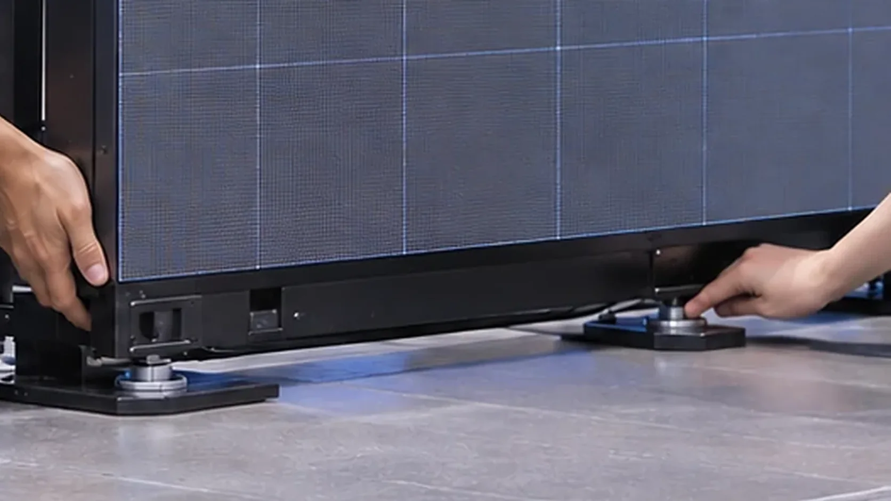

TECHNICAL SUPPORT
技術スタッフを頼む
設営から本番、撤去まで。決まっている現場の担当工程から、機材を含む相談まで受け付けます。
- 設営
- 搬入・設置・配線・動作確認
- 本番
- リハーサル、映像の送出・操作
- 撤去
- 撤去・梱包・搬出
ホーム / 事業案内
OUR SERVICES
LOTUS VISUAL の仕事は、イベントを支える技術提供と映像機材レンタル。
人の役割と道具の構成を、必要なところから一緒に組み立てます。
SERVICE LINEUP
人を頼むのか、機材を借りるのか。どちらからでも始められます。

TECHNICAL SUPPORT
設営から本番、撤去まで。決まっている現場の担当工程から、機材を含む相談まで受け付けます。

EQUIPMENT RENTAL
使い方に合わせて、LOTUS VISUAL が機材を手配・提供します。技術提供との組み合わせもご相談いただけます。
FIND YOUR REQUEST
技術提供だけ、機材だけ、両方。必要な部分からご相談ください。
機材は決まっていて、担当する人を相談したい。
設営・配線／リハーサル・本番／撤去
最初に伝えること使用機材と、担当してほしい工程
技術スタッフを相談する ↗設営や操作は自分たちで行い、機材を相談したい。
LED 等の映像機材を手配・提供
最初に伝えること仕様・数量・利用日程・受け渡し
機材と日程を相談する ↗機材の手配と、現場の担当をまとめて相談したい。
機材手配 ＋ 必要な工程の技術提供
最初に伝えること映したい内容と、任せたい工程
まとめて相談する ↗WORKING BOUNDARIES
お客様・制作チーム・会場と、LOTUS VISUAL の担当をそろえていきます。